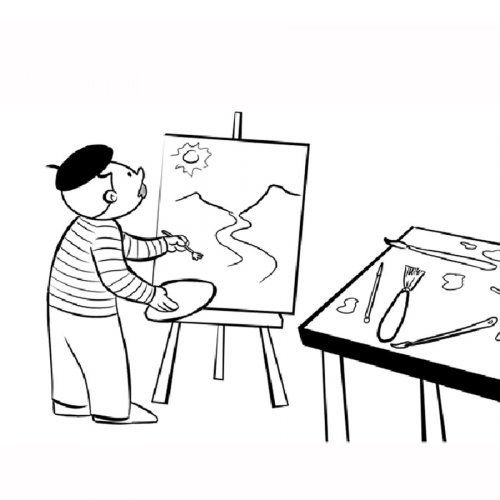

|
|
|
|
|---|
El Teatro
El teatro es una forma de arte escénico que combina la actuación, el diálogo, el gesto, el sonido y muchas veces la música para contar historias frente a una audiencia.
Desde la antigüedad, ha sido una herramienta poderosa para educar, entretener y reflexionar sobre temas humanos, sociales y emocionales.
¿Qué lo hace especial?
A diferencia de otras artes, el teatro ocurre en vivo, lo que crea una conexión única entre los actores y el público. Cada función es distinta, incluso cuando se repite la misma obra.
La puesta en escena involucra elementos como escenografía, iluminación, vestuario y sonido, que enriquecen la experiencia del espectador.

El teatro como expresión cultural
El teatro refleja la cultura, la historia y las emociones de una sociedad. A lo largo del tiempo ha evolucionado, adaptándose a nuevas formas y temáticas.
En algunas regiones es una forma de preservar tradiciones, mientras que en otras se utiliza para cuestionar realidades y proponer cambios sociales.
La diversidad de estilos teatrales en el mundo demuestra cómo esta disciplina se transforma y se mantiene viva gracias a la creatividad de quienes la practican.
El teatro en la educación
Incluir el teatro en la formación artística ayuda a mejorar la expresión oral, la seguridad en uno mismo y el trabajo en equipo.
También permite desarrollar empatía, creatividad y una mejor comprensión del lenguaje y las emociones humanas.
El teatro sigue siendo un arte vivo que conecta a las personas a través de historias. Nos permite imaginar otros mundos, conocer diferentes puntos de vista y explorar quiénes somos.